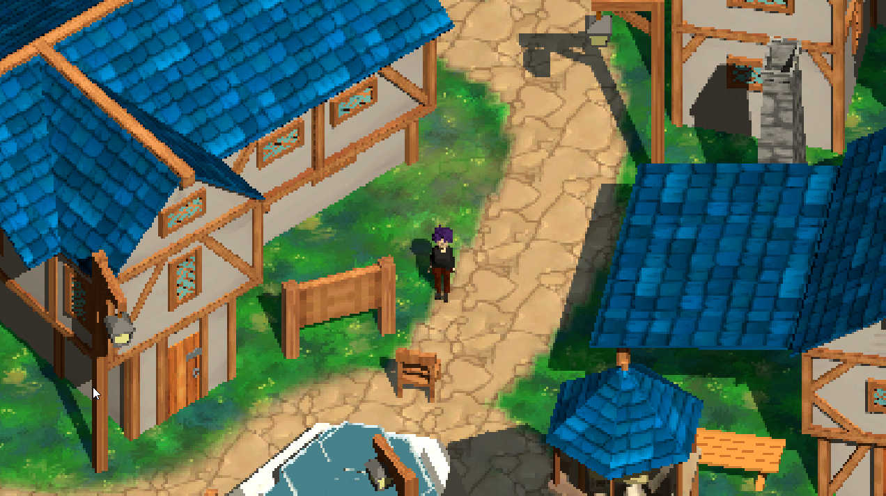
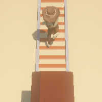

Games
I first downloaded Unity back during quarantine. I've learned a lot since then and am still discovering new things every day.

Ascadia
A stylized semi open world 3D pixelated game. Made using URP.

Eleventh
A linear story driven game about a princess and her prince where things are not what they seem...

Anti Subway Surfer
My game jam submission for GMTK 2023. The theme was "role reversed" so I thought I'd make a subway surfer game where you control the trains instead! ps: If you can't see the player or time, please zoom out in your browser.